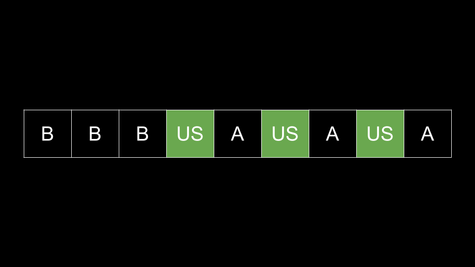

Intuition
In this game, we pick three numbers at a time and gain score equal to the element with the middle value. Note that at the end:
scoreAlice+scoreBob+scoreUs=SUM(piles)\text{score}_\text{Alice} + \text{score}_\text{Bob} + \text{score}_\text{Us} = \text{SUM}(\text{piles})
Because the sum of piles is a constant for a given test case, we can maximize our score by minimizing
the score of the other two players.
Let's think: at the start of the game, what are the most points we can gain with our first move? Is it possible for us to take the pile with the most coins?
No, it is impossible for us to ever take this pile. On any choice of piles that contains the maximum pile, the maximum pile will necessarily be the largest pile chosen, and thus will go to Alice.
Thus, the best we can do is to take the pile with the second most coins, after giving the pile with the most coins to Alice. Which pile should we choose for Bob? As mentioned above, we want to minimize scoreBob\text{score}_\text{Bob}, so we will give Bob the smallest pile.
In our first choice, we removed the smallest pile and the two largest piles. This resulted in us gaining the maximum possible score while minimizing the score that Bob would gain and was an optimal first choice. What should we do for our second choice?
As every choice is independent of each other (except for the fact that we remove some piles), there is no reason for us to use a different strategy. Again, of the remaining piles, we should give Alice the largest pile, Bob the smallest pile, and take the second largest pile for ourselves.
The reason this greedy strategy works is because, at any given moment, it is impossible for us to ever claim the largest pile. In fact, this pile will always go to Alice. The largest pile we can claim is the second largest pile, but we can only accomplish this by giving Alice the largest pile. While increasing Alice's final score decreases our final score (from the equation above), Alice will inevitably obtain the largest pile anyway.
Since Alice will inevitably claim the largest pile regardless of our choices, we may as well use her to obtain the second-largest pile. This maximizes our own score. Then, we hand Bob the smallest pile to minimize his score. While unintuitive, this is also minimizing Alice's score (since she will take the largest pile regardless, but we take the second largest pile so that she can't later).
To implement this strategy, we will sort piles and then put the sorted piles into a double-ended queue
(deque) queue. At each step, we pop from the back of queue and give the pile to Alice.
Then we pop from the back again and take this pile for ourselves. Finally, we pop from the front of
queue and give this pile to Bob. The above process will continue until we have emptied all the piles in
queue.
Note that the problem only wants our score, so we don't need to track Alice's or Bob's score.
Algorithm
piles.queue with the elements of piles.ans = 0.queue is not empty:
queue.queue and add the element to ans.queue.ans.Implementation
Java
class Solution {
public int maxCoins(int[] piles) {
Arrays.sort(piles);
ArrayDeque queue = new ArrayDeque();
for (int num : piles) {
queue.addLast(num);
}
int ans = 0;
while (!queue.isEmpty()) {
queue.removeLast(); // alice
ans += queue.removeLast(); // us
queue.removeFirst(); // bob
}
return ans;
}
}
C++
class Solution {
public:
int maxCoins(vector& piles) {
sort(piles.begin(), piles.end());
deque queue;
for (int num : piles) {
queue.push_back(num);
}
int ans = 0;
while (!queue.empty()) {
queue.pop_back(); // alice
ans += queue.back(); // us
queue.pop_back();
queue.pop_front(); // bob
}
return ans;
}
};
Python3
class Solution:
def maxCoins(self, piles: List[int]) -> int:
piles.sort()
queue = deque(piles)
ans = 0
while queue:
queue.pop() # alice
ans += queue.pop() # us
queue.popleft() # bob
return ans
Complexity Analysis
Given 3n3n as the length of piles,
Time complexity: O(n⋅logn)O(n \cdot \log{}n)
We sort piles, which costs O(n⋅logn)O(n \cdot \log{}n). Then, we convert it to a queue and pop
each element from queue, which would cost O(n)O(n) in total.
Space complexity: O(n)O(n)
queue uses O(n)O(n) space.
The space complexity of the sorting algorithm depends on the implementation of each programming language:
Intuition
We don't actually need to simulate the process, because our choice is the same at every step. Notice that Bob will
always get the nn smallest piles, and the remaining piles
alternate between us and Alice. Of the remaining piles, Alice gets the largest one, then we get the second largest
one. Then Alice would get the third largest one, and we would get the fourth largest one, and so on. When we sort
piles, we get the following pattern:

Here, B stands for piles that Bob will get, A stands for piles Alice will get, and US are the piles that we will get.
As such, we can find the piles that we will claim by iterating over piles. We will start iterating at
index nn as this is the first pile after Bob's piles. We
iterate two indices at a time, as every other index belongs to Alice.
Recall that in the problem description, the length of the array is given as
3n. That's why we say we start iterating at indexn, notn / 3.
Algorithm
piles.ans = 0.i over the indices of piles, starting from piles.length / 3 and
incrementing i by 2 per iteration:
piles[i] to ans.ans.Implementation
Java
class Solution {
public int maxCoins(int[] piles) {
Arrays.sort(piles);
int ans = 0;
for (int i = piles.length / 3; i < piles.length; i += 2) {
ans += piles[i];
}
return ans;
}
}
C++
class Solution {
public:
int maxCoins(vector& piles) {
sort(piles.begin(), piles.end());
int ans = 0;
for (int i = piles.size() / 3; i < piles.size(); i += 2) {
ans += piles[i];
}
return ans;
}
};
Python3
class Solution:
def maxCoins(self, piles: List[int]) -> int:
piles.sort()
ans = 0
for i in range(len(piles) // 3, len(piles), 2):
ans += piles[i]
return ans
Complexity Analysis
Given 3n3n as the length of piles,
Time complexity: O(n⋅logn)O(n \cdot \log{}n)
We sort piles, which costs O(n⋅logn)O(n \cdot \log{}n). Then, we iterate over piles, which
costs O(n)O(n).
Space Complexity: O(logn)O(\log n) or O(n)O(n)
We aren't explicitly allocating any extra space. However, sorting may use some space.
The space complexity of the sorting algorithm depends on the implementation of each programming language: